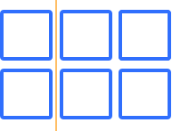

What is the CSS Grid?
A two dimensional layout system, controlling layout in rows and columns.
Terminology
Grid Container
The container that holds the entire CSS grid. It is the element that has the display:grid or display:inline-grid on it.
.grid-container {
display: grid;
}
Grid Item
Any element that is a direct child of a grid container.
.grid-container {
display: grid;
}
Grid Item 1
Grid Item 2
Grid Item 3
Grid Line
The vertical and horizontal lines that divide the grid and separate the columns and rows.
Grid Cell
A single unit of a CSS grid.

Grid Area
Rectangular space surrounded by four grid lines.
A grid area can contain any number of grid cells.

Grid Track
The space between two grid lines.
This space can be horizontal or vertical.
Grid Row
A horizontal track of a grid.

Grid Column
A vertical track of a grid.

Gutter
The space between rows and columns in a grid.
Example
.grid-container {
display: grid;
grid-template-columns:
repeat(3, 1fr);
}
Grid Item 1
Grid Item 2
Grid Item 3
grid-template-columns
grid-template-rows
A way to define the number of rows and columns as well as their size.
CSS length unit: fr
- What is fr ?
- What does repeat() do?
-
Example:
repeat(4, 25%)
vs.
repeat(4, 1fr)
with
grid-column-gap: 10px ?
repeat(4, 25%)
repeat(4, 1fr)
An Explicit Grid
.grid-container {
display: grid;
grid-template-columns: 1fr 2fr 1fr;
grid-template-rows: 4fr 1fr 2fr;
grid-row-gap: 1rem;
grid-column-gap: 4rem;
}
A Dynamic Grid
.grid-container {
display: grid;
grid-template-columns: minmax(auto, 40%) 1fr 12rem;
grid-template-rows: minmax(75px, auto) minmax(75px, 150px) auto;
grid-row-gap: 4rem;
grid-column-gap: 2rem;
}
(very very very very very very long content)
Browser Dev Tools

- Open the DevTools (F12, Right-Click + Inspect)
- Click on "grid"
Grid Items
To Do
- explain the relevant properties CSS grid items
Exercises
Do the exercises 1-14.
https://cssgridgarden.com/what to cover
- display: grid (parent)
- what are grid-items
- grid-template-columns/grid-template-rows
- grid-column-start/grid-column-end
Example slide
- Bullet 1
- Bullet 2
- Bullet 3
- Bullet 4
- Bullet 5
Code example
Interesting code example
.container {
display: flex;
flex-direction: column;
background-color: red;
}